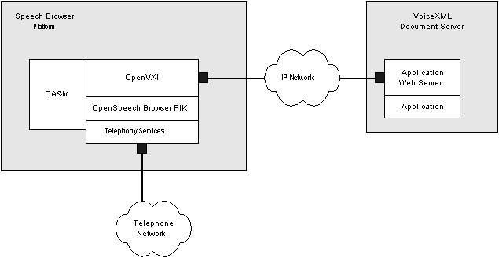
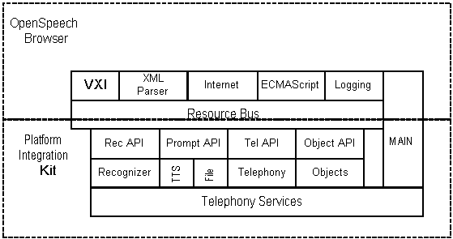

OpenSpeech Browser PIK
OpenSpeech Browser PIK
OpenSpeech Browser PIK Architecture
The OpenSpeech Browser PIK is a portable open source based
toolkit that interprets the VoiceXML dialog markup language. It is
designed to serve as a platform integration kit for system integrators
and platform vendors who want to incorporate VoiceXML into their
platform using SpeechWorks International, Inc. products. Although it
is perfectly suitable for PC desktop applications, its design reflects
VoiceXML's target of telephony platforms.
Introduction
A browser is a client application program that takes one or more input streams on a platform and executes an application that lives on one or more document servers by interpreting markup. In the case of VoiceXML, the application consists of the call flow logic, the prompts for the application, and any associated grammars (see figure below). The document server executes portions of the application dialog by delivering VoiceXML markup to the browser in response to a document request. The markup interpreter renders the VoiceXML markup within an interpreter context, perhaps changing the context, and then makes calls into the implementation platform. The implementation platform contains all of the resources needed by the markup interpreter to render the dialog.
Process Architecture
The figure below shows the components for a VoiceXML system. When a call is received it is detected by the implementation platform. The platform sends an event to the markup interpreter, which looks in its context for the URI of the initial document to fetch. The interpreter then sends a Request to the Document Server for the initial document. The Document Server then sends the document back to the Markup Interpreter which then instructs the Implementation Platform on the first steps to perform on behalf of the caller. The Markup Interpreter then interprets the result of an execution in the Implementation Platform. The interpretation may result in the Markup Interpreter making additional document requests to the Document Server.
System Architecture
The figure also shows the system architecture where the OpenSpeech Browser PIK is integrated onto a platform by adding SpeechWorks recognition and text-to-speech technology, and platform monitoring, administration, and telephony functionality. This integrated platform receives VoiceXML pages from a document server. The document server consists of a web server, potentially an application framework, and a VoiceXML application. The VoiceXML application can be one or more VoiceXML files, or these files can be dynamically generated using CGI scripts or other computations.

The speech browser platform executes the VoiceXML pages to provide the speech service to the caller connected over the telephone network. The speech browser platform logically consists of four parts:
- Main process and operations, administration, and maintenance system: collection of tools responsible for system management and error reporting. This critical component also invokes the speech browser within a thread it creates to begin execution.
- OpenVXI: interprets the VoiceXML markup and calls into the implementation platform to render the markup.
- OpenSpeech Browser PIK: provide the high-level services necessary for the system to run, including the recognition engine, prompt engine, Internet fetch library, and ECMAScript engine. The OpenVXI accesses these components through interfaces that must be implemented in order for the system to function. These interfaces do not define the mechanism for communicating between the implementation of the interface and the underlying software: this could be done using client/server protocols or direct communication.
- Telephony and base services: base operating system services and telephony services needed to receive phone calls. The OpenSpeech Browser PIK makes few assumptions about the operating system and telephony services, as it accesses them through replaceable interfaces.
OpenSpeech Browser PIK Components

The figure above shows the OpenSpeech Browser PIK architecture and the component parts, including an integration with SpeechWorks products for speech recognition and text-to-speech. All components are designed to be portable across operating systems. The speech browser consists of:
- VXI
Interprets all VoiceXML markup and acts as the main control loop. The VXI implements all required portions of the VoiceXML 1.0 specification and most optional features.
- XML Parser Interface
Provides access to a XML DOM parser, currently implemented by directly calling the open source Apache Xerces SAX and DOM parser APIs.
- Internet Interface
Provides access to application documents via http:// and file:// access, as well as support for POSTing data back to the application server. The reference implementation integrates the open source W3C Libwww library.
- ECMAScript (JavaScript)
Interface
Provides access to ECMAScript execution services. The reference implementation integrates the open source Mozilla SpiderMonkey engine.
- Logging
Interface
Used to report errors, events, and diagnostic messages to system operators. The reference implementation logs to a file and optionally to standard output.
The core browser relies on a set of platform APIs. These include:
- Recognizer Interface
Provides the grammar management and recognition services as required by the VoiceXML specification, including dynamic grammar construction and grammar enabling. It obtains caller input via the telephony services. The OpenSpeech Browser includes an OpenSpeech Recognizer integration.
- Prompt Interface
Provides complete prompting services, including the ability to play "filler" audio in order to support fetch audio. It must handle recorded audio (specified by URI) and provide text-to-speech services, passing the returned audio to the telephony services for playback. The OpenSpeech Browser PIK includes a prompt implementation based on a Speechify Text-to-Speech integration.
- Telephony Interface
Provides call control services, including the ability to transfer and disconnect calls as well as delivering telephony events. The OpenSpeech Browser PIK includes a telephony implementation that interacts with the underlying telephony abstraction APIs to provide call control services.
- Object Interface
Provides access to objects, platform defined extensions to the VoiceXML language that are accessed through the object element. Objects can easily be defined to meet platform specific requirements for extended call control, CTI screen pop, or other requirements. The OpenSpeech Browser PIK includes a reference object interface implementation that calls a C function for executing the appropriate object based on the object's name, including two simple reference objects: one for providing extended logging access, one for echoing the parameters to an object for application debugging purposes.
OpenSpeech Browser PIK Interfaces
The Interface Reference provides full documentation for each interface. These comply with the following:
· All interfaces are ANSI/ISO C compliant with an object oriented design
· All interfaces are defined as structures containing C function pointers for each method
· All interfaces use a base type system, abstracting all the basic C types to enable operating system independence
· Character data is passed using the ANSI/ISO C wchar_t wide character type, which is an operating system dependant type that allows passing wide character (generally Unicode UCS-2) based data, permitting easier internationalization and localization
· Error codes are enumerated for each interface, where errors less than zero are fatal errors, 0 is always success, and return codes greater than zero are non-fatal errors
· To avoid issues that occur where memory is allocated by one DLL/shared library and destroyed by another, when data is returned by an interface a destructor is provided to destroy that data
·
All interface methods follow this calling convention:
VXI<module name>Result VXI<module name><function> (handle, in
variables, in/out variables, out variables)
Copyright (c) 2000-2001. SpeechWorks International, Inc. All rights reserved.
VoiceXML is a Trademark of the VoiceXML
forum.